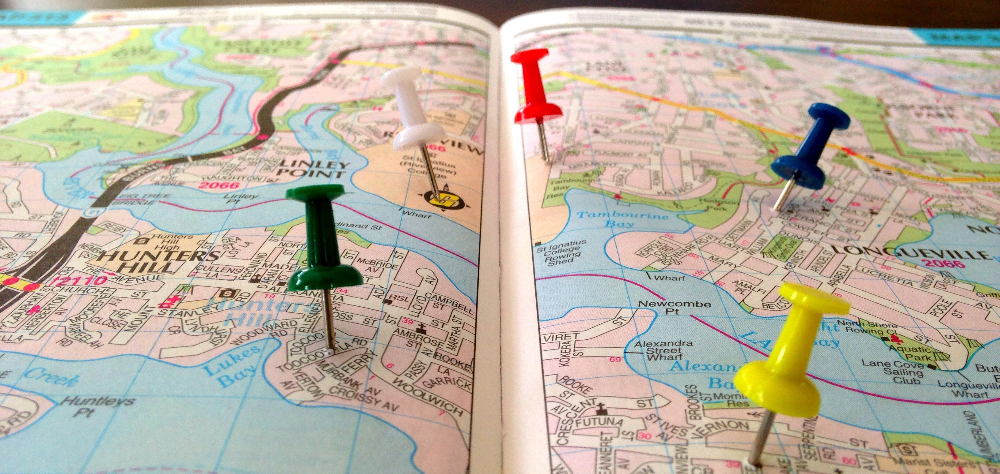

Geoportfolio
Ditto Pikachu (Julian Minato)
About
This website is the geoportfolio of Julian Minato. The website entails
information that is academically and professionally related to the field of geospatial science
I am an aspiring geospatial scientist currently in my third-year of studying a Bachelor of Geospatial Science (Honours) degree at RMIT University.
My geospatial-related interests are anything Cartography related - I love the map making process and being able to visualise information in a manner that anyone can interpret.
My most recent geospatial project covered a Spatial Distribution, Clustering and Population Analysis of Melbourne’s Metropolitan Train Network. Some outputs from this project can be seen in this portfolio.
Academic Portfolio Overview
Cartography
Cartography consists of creating maps using spatial data obtained from sources such as publicly online government data and population numbers from the Australian
Bureau of Statistics (ABS). While there were two tests and a first practical (not included as it was more of a report rather than a map), the significant
practicals completed in Cartography 2 involved the production of three maps of the student's choice based on a specific topic:
- Practical 2: Map directed at a target audience of choice using provided data of Melbourne City
- Practical 3: Thematic mapping of a demographic's population using data from the Australian Bureau of Statistics (ABS)
- Final Cartography Map: Free-choice on topic
Below are the three maps that I have created as part of my course:
Note: If map display is too small, right-click the image and 'Open in new tab' to allow zooming of the map.
Melbourne Map: 11 of Melbourne's Best Laneways and Attractions

Thematic Map: Italian Ancestry in Melbourne

Story Map: Cashing in on Exhaustion: The Fatigue Factor in Football's Corporate Grind

Spatial Information System Analytics (SIS)
Spatial Information System Analytics is the third and final SIS subject in the degree. It focuses on quantitative methods of spatial pattern analytics applicable to different types of geographical data
and emphasises spatial, statistical, and numerical techniques for describing, analysing, and comparing spatial patterns so that spatial relationships among relevant geographical phenomena can be characterised, modelled, predicted, or optimised.
The topics in the subject included statistical measures and GIS-based methods for the following:
- Spatial Interpolation
- Spatial Pattern Analysis
- Regression Analysis
For the 2024 version of the course which I completed, the final assignment was to answer a practical geographical question as a geospatial analyst.
It involved gathering data, devising an analytical process, and producing results in order to answer the question.
My aim was to investigate the spatial distribution of stations and analyse ridership patterns of Melbourne's metropolitan
train network to help make formulated decisions.
As part of the project I produced the following maps:
- Melbourne's Metropolitan Train Network Map (manually compiled from raw station spatial data)
- Near Analysis of Melbourne's Road Network to the nearest Metropolitan Train Station
- A heat map of patronage on the network
- A population density map of Urban Melbourne
All maps were created using raw spatial data collected from DataVic and Public Transport Victoria.
All maps were constructed and outputted with ArcGIS Pro.
Note: If map display is too small, right-click the image and 'Open in new tab' to allow zooming of the map.
Melbourne's Metropolitan Train Network Map

Near Analysis and Patronage Heat Map


Population Density Map

Industry Experience
This page will briefly cover all my work experience (as of September 2022) within the geospatial science industry. The two main companies that I have worked at
were AAM Group and Tetra Tech. This page will outline my experience gained and skills I have learned from working at AAM Group and Tetra Tech along with an
overview of my current geospatial skillset.
AAM Group

Geospatial Intern - Image Processor
April 2021 - March 2022
My time at AAM Group was part of an internship for the thirty day work experience subject. The work experience subject taught me a lot about what industry
standard work is done within the geospatial industry. I chose to work at AAM Group as I read about it online on how it is a large company that does a lot of
geospatial activity and to my personal knowledge, is one of the few companies that specialise solely on different forms of geospatial work as their primary
source of business compared to other companies that have a spatial team but the company itself does not specialise in geospatial work. The work at AAM Group in
the Melbourne office was less about performing geospatial analysis on pre-existing data, but rather capturing and collecting their own spatial data which
the mapping team process and edit into a usable form for the client.
As part of the mapping team, the work I was exposed to was editing and processing aerial imagery-based data. The work consisted of editing out distortions and
errors in the aerial imagery, manipulating colour bands of the orthomosaics to brighten or darken the imagery to the client's needs and creating Digital
Terrain Models from provided LIDAR captured imagery from elevation models. My work at AAM Group used less ArcGIS products than I initially believed, using
other programs such as Global Mapper and AAM-exclusive products due to their Melbourne work being focused on aerial imagery rather than spatial data analysis.
Tetra Tech
Graduate Geospatial Consultant
May 2022 - Present (as of September 2022)
My work at Tetra Tech as part of the spatial team involves using the ArcGIS suite for producing figures and maps for both internal staff members from other
departments and entites from external companies. The work is primarily modifying and publishing maps based on the specifications outlined by the client, either
editing the pre-existing data to be updated or creating new figures and information for visualisation on the maps. A lot of the work requires knowledge of
programming languages such as Python, Visual Basic (VB) and SQL to assist with automating tasks and sorting through spatial databases and attribute tables.
The work that I have done is not limited to spatial analysis. At one point, I was publishing raster datasets for Web GIS-use and another, I was checking off
graphs to make sure that the graphs had all the data required on them, either adding the data onto the graph myself if the data is available or outlining the
graphs with the missing data for inspection by another staff member if I cannot add the data onto the graph myself.
Skills and Proficiencies
 |
GIS |
 |
ArcGIS |
 |
Cartographic Principles |
 |
Adobe Illustrator |
 |
Mathematics |
 |
Problem Solving |
 |
Web Design: HTML & CSS |
 |
Web GIS |
Credits and Attributions
The following programming languages and software were used to create the website
- HTML
- CSS
- JavaScript
- Visual Studio Basic
The deliverables contains content from the following subjects:
- Cartography 2 (GEOM2079)
- Spatial Information System Analytics (GEOM1057)
Special thanks to the following people who have helped me make this website with their expertise and guidance:
As per the policy of using the Flaticons with a free account, the attributions and crediting of the creators of the icons are as below:
Attributions of icons used: